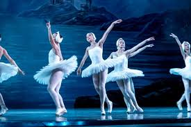

DANZA
La danza es el arte del movimiento del cuerpo, que generalmente se realiza con música, aunque no siempre. Es una forma de expresión artística y de interacción social que utiliza el ritmo, el gesto y la coordinación para comunicar emociones, ideas y sentimientos. Históricamente, la danza ha desempeñado un papel fundamental en rituales, celebraciones y cohesión social, y hoy en día se practica por entretenimiento, expresión física, actividad física y conexión social
Algunas caracteristcas de la danza son
- Expresión y comunicación: Permite a las personas expresar emociones, ideas y contar historias a través del lenguaje no verbal.
- Interacción social: Se utiliza en eventos sociales, celebraciones y rituales para la cohesión de un grupo o para la interacción entre las personas.
- Arte del movimiento: Es el arte de usar el cuerpo para crear movimiento en el espacio y el tiempo

PRESIONA LA IMAGEN PARA QUE TE LLEVE A UN VIDEO